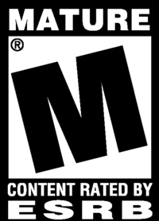

Mass Effect: Andromeda is an action role-playing video game developed by BioWare Montreal and published by Electronic Arts for PlayStation 4, Xbox One and Microsoft Windows. The game was released worldwide in March 2017. It is the fourth entry overall in the Mass Effect series and the first since 2012's Mass Effect 3. The game begins within the Milky Way Galaxy during the 22nd century, where humanity is planning to populate new home worlds in the Andromeda Galaxy as part of a strategy called the Andromeda Initiative. The player assumes the role of either Scott or Sara Ryder, an inexperienced military recruit who joins the Initiative and wakes up in Andromeda following a 600-year journey. Mass Effect: Andromeda has a lighter tone than previous installments in the series, with open world elements and an emphasis on exploration. Many of the series' traditional gameplay elements remain, while others have been modified, such as combat, which is less cover-based and more mobile. The game has received a mixed reception from critics. Praise was directed at the game's improved combat, while it was criticized for its animations, dialogue, characters and technical issues (Wikipedia.com).